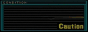

Artykuł • aktualizacja: —
TaboLore
Wstęp
TaboLore to zbiór zasad, żartów, tradycji i „kanonu” streamów Tabo. Widzowie przechodzą przez własną ścieżkę wtajemniczenia (od sezonowca po weterana/hejtera), a ważne momenty trafiają do TaboLOGu.
Główne zasady TaboLore
- Każdy nowy widz staje się sezonowcem i jest poddawany próbie. Po pozytywnym przebyciu szkoły przetrwania, widz staje się twardym taboretem. Z czasem może stać się weteranem lub hejterem.
- Każdą grę przechodzimy na Hardzie.
- Na

się nie leczymy. - Nie biegamy z jak Pestarz.
- TaboLore wymaga zebrania wszystkich proszków (gun powder).
- W każdym RE jest respawn przeciwników.
- Strimy Tabo, jak i jego widzowie, nie istnieją.
- Tabo jest proplayerem.
- Główne atrybuty proplayera: podkoszulka „żonobijka”, proplayerskie rękawiczki, ćwicznik palców i niebieskie słuchawki.
- LtAsiaa jest najlepszym moderatorem na całym twitchu. Jest KZM i odpowiada za „normalne” funkcjonowanie strimów.
- Punkt 20:30 — baczność do Tabo Hymnu.
- Wszystkie ważne wydarzenia podczas strima są odnotowywane w TaboLOGu.
- Do weryfikacji na Tabowym discordzie należy pokazać swoje gry na płytach wraz z książeczkami.
- Gramy dla fabułki, a nie dla obrazeczków (platyn) czy speedrunów… Nie no żart, moderatorka jest jednym z naczelnych platyniarzy zespołu taboretów, Taboret Samplarz jest speedrunerem residentów - kochamy i szanujemy wszystkich (nawet sezonowców).
- Każdy stream przyjmuje pewną formę żartu — przychodząc tu musisz mieć ogromny dystans.
- Dokuczanie sobie jest tolerowane: przesada = T/O, potem Ban. Moderacja ma pełną decyzyjność.
- Taboretowe hasło: WSZYSCY DO BANA.
- Orzechowy mieszka w Skandynawii.
- O wyjście z sezonowców można starać się wyjść po przynajmniej 3 strimach.
- Sezonowcy nie mogą wykupywać przeszkadzajek!
- W Tabologii niepoprawnym jest celowe dawanie i odbieranie follow tylko po to, aby zdobyć punkty.
- Haminir to Stefan
- Pierd0la jest na kadym finale gry!
- Po 00 następuje wyłączenie wszystkich przeszkadzajek - niech strimer w końcu kurwa pogra!
Hierarchia widzów
- Sezonowiec — nowy widz nie znający Lore.
- Twardy taboret — widz po szkole przetrwania, znający Lore w stopniu wystarczającym.
- Weteran — twardo stojący taboret, zna zasady i lore.
- Hejter — wredny taboret.
Zadania moderacji
- Znać na wylot TaboLore.
- Według Tabologii, moderatorzy są bezwzględnie wierni swojemu strimerowi. Każde zachowanie wskazujące na niesubordynację, będzie karane usunięciem ze stanowiska.
- Moderacja ma za zadanie kazdorazowo po strimie robic sprawozdania z wydarzeń na strimie oraz sprawozdanie z czatu (wykrywanie hejterów i loverków).
- Tylko KZM ma prawo opierdalac strimera!
Pytania retoryczne
- Czy Tabo jest proplayerem? — Oczywiście, że tak.
- Kiedy są strimy? — Z założenia codziennie koło 20, praktycznie wtedy kiedy jest czas i ochota (powiadomienia na DC).
- Jak zwierzaczki Tabo się wabią? — kot: Migi, pies: Pucia/Pułapka (ma 3,5 łapki).
- Gdzie Tabo pracuję? — Jest bibliotekarzem.
- Jak Tabo ma na imię? — Imię: Tabo, Nazwisko: Retro.
- Co zazwyczaj Tabo popija podczas strima? - Łzy platyniarzy!
- Ile Tabo strimuje? - Od około marca 2025